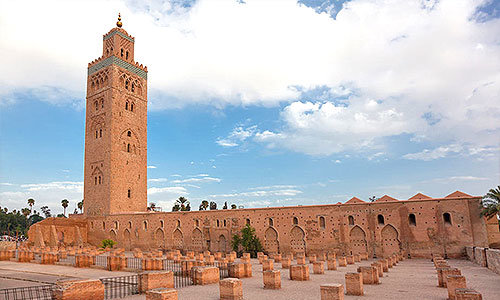
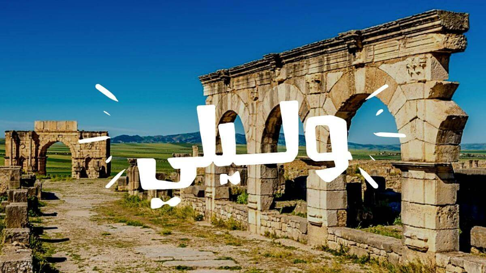
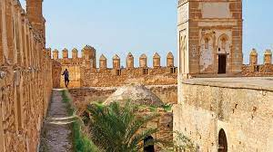
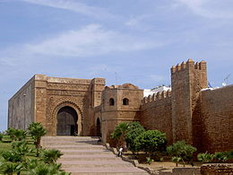
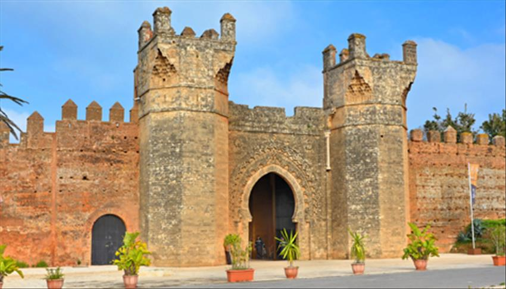

صومعة حسان
صومعة حسان التاريخية التي تم بناؤها في العصر الموحدي في الرباط بالمغرب، وهي إحدى المباني الثقافية المتميزة في المنطقة. تم بناء جامع حسان على أمر من السلطان يعقوب المنصور في عام 1197-1198 م، وكان يعد من أكبر المساجد في عهده. ومع ذلك، توقف المشروع بعد وفاته، وتعرض المسجد للاندثار بسبب الزلزال الذي ضرب الرباط في عام 1755 م. ويرى المؤرخون أن اختيار بناء هذا المسجد في الرباط كان يهدف إلى جعل المدينة أكبر وأهم من فاس ومراكش، ولكن المشروع لم يتم بالكامل بسبب نفاد موارد الدولة

جامعة الكتبية
النص يتحدث عن جامع الكتبية المراكشي، وهو من المعالم الإسلامية الراسخة في تاريخ المغرب. تم بناء المسجد الأول من قبل الخليفة عبد المومن بن علي الكومي في عام 1147 م على أنقاض قصر الحجر المرابطي، وتم بناء المسجد الثاني في عام 1158 م. يتكون المسجد من 17 جناحًا و 11 قبة مزدانة بالنقوش، ويشكل التقاء رواق القبلة بقببه الخمسة والرواق المحوري تصميمًا وفيًا لخصائص العمارة الدينية الموحدية. يعتبر منبر الكتبية الجليل مزوّدًا بنظام آلي للحركة، وهو من روائع فن النجارة الإسلامية. تم نقل المنبر من قرطبة إلى الكتبية نحو عام 1150 م. كما يتحدث النص عن صومعة الجامع التي أنشأت بأمر من الخليفة الموحدي عبد المومن بن علي الكومي وأنهاها بعده ابنه المنصور عام 1195 م. يعتبر جامع الكتبية من أهم جوامع المغرب ورمزًا لمدينة مراكش.

مدينة الاترية مدينة وليلي
النص يتحدث عن جامع الكتبية المراكشي، وهو من المعالم الإسلامية الراسخة في تاريخ المغرب. تم بناء المسجد الأول من قبل الخليفة عبد المومن بن علي الكومي في عام 1147 م على أنقاض قصر الحجر المرابطي، وتم بناء المسجد الثاني في عام 1158 م. يتكون المسجد من 17 جناحًا و 11 قبة مزدانة بالنقوش، ويشكل التقاء رواق القبلة بقببه الخمسة والرواق المحوري تصميمًا وفيًا لخصائص العمارة الدينية الموحدية. يعتبر منبر الكتبية الجليل مزوّدًا بنظام آلي للحركة، وهو من روائع فن النجارة الإسلامية. تم نقل المنبر من قرطبة إلى الكتبية نحو عام 1150 م. كما يتحدث النص عن صومعة الجامع التي أنشأت بأمر من الخليفة الموحدي عبد المومن بن علي الكومي وأنهاها بعده ابنه المنصور عام 1195 م. يعتبر جامع الكتبية من أهم جوامع المغرب ورمزًا لمدينة مراكش.

قصبة أبي الأعوان
قصبة أبي الأعوان التي تقع في منطقة أبي الأعوان شرق تراب قبيلة دكالة المغربية، وهي قلاع إسماعيلية كبيرة ومهمة. تم بناء هذه القصبة في العام 1122 (1710 م) وهي أحد أهم المعالم السياحية في المنطقة. يشار إلى أن القصبة تحتوي على العديد من الأبراج والجدران السميكة المصنوعة من الطوب الطيني، وتتميز بتصميم دفاعي قوي يحميها من الأعداء. يرغب العديد من الزوار في استكشاف تاريخ هذه المنطقة الجميلة والاستمتاع بمناظرها الخلابة.

قصبة الوداية
قصبة الوداية هي قلعة محصنة تم تشييدها في العصور الوسطى لمحاربة قبائل برغواطية، وازدادت أهميتها في عهد الموحدين الذين جعلوا منها رباطاً على مصب نهر أبي رقراق، وأطلقوا عليها اسم المهدية. وبعد الموحدين، استوطنها الموريسكيون الحرناشيون وأعادوا إليها الحياة بتدعيمها بأسوار محصنة، وبين 1627 و1668، كانت قصبة الأوداية عاصمة للكيان السياسي، الذي عرف بجمهورية بورقراق، والذي اعتمد على القرصنة البحرية. وفي عهد العلويين عرفت القلعة عدة تغييرات وإصلاحات، وتحتوي القصبة على العديد من المعالم الأثرية المهمة التي تجذب الزوار من جميع أنحاء العالم، وتعد واحدة من أهم المعالم السياحية في المغرب.

شالة
موقع شالة هو موقع أثري يقع في مدينة الرباط المغربية ويعود تاريخه إلى القرن السادس قبل الحقبة العامة. يتكون الموقع من منطقة جنائزية مرينية على أطلال رومانية وفينيقية ومحصن بجدران موحدية. ابتدأ الموقع باسم "سلا كولونيا" في العهد الروماني وبدأ يحمل اسم شالة في العهد الإسلامي. المدينة ازدهرت تحت حكم الملوك الموريين وسكت نقودا تحمل اسمها. تميزت المدينة بتغيير في مكوناتها الحضرية بإنشاء الساحة العمومية والحمامات والمعبد الرئيسي وتحصينها بحائط متواصل. تحيط المدينة بسور دفاعي وكانت تحت الاحتلال الروماني حتى أواخر القرن الرابع أو بداية القرن الخامس الميلادي. لا تزال حدود المدينة القديمة غير معروفة ولم يتم الكشف عنها إلا في الحي العمومي الذي ينتظم بجانبي شارع رئيسي ويتضمن معبدًا مكونًا من خمس مقصورات تبرز التأثير المعماري الموري.